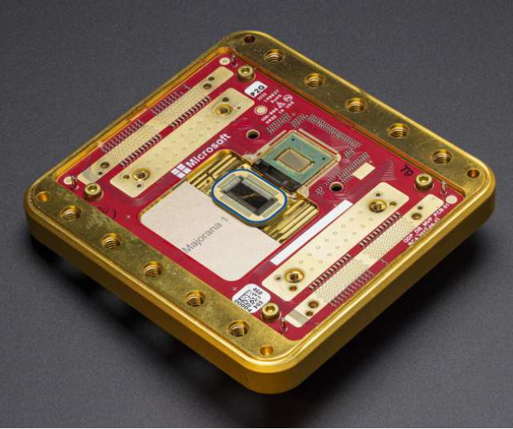

The Rise of Quantum Computing
Posted on April 20, 2025

Quantum computing is poised to revolutionize technology by solving problems beyond the reach of classical computers. In 2025, quantum advancements are accelerating, promising breakthroughs in cryptography, drug discovery, and more. This post explores what makes quantum computing unique and its potential impact.
How Quantum Computers Work
Unlike classical computers that use bits (0 or 1), quantum computers use qubits, which can exist in multiple states simultaneously thanks to superposition and entanglement. This allows quantum computers to perform complex calculations exponentially faster for specific tasks, such as factoring large numbers or simulating molecular structures.
Applications in 2025
Quantum computing is already impacting industries. In pharmaceuticals, it accelerates drug discovery by modeling molecules with unprecedented accuracy. In cybersecurity, quantum algorithms could crack current encryption, prompting the development of quantum-resistant cryptography. Companies like IBM and Google are racing to build scalable quantum systems, with cloud-based quantum access available to researchers.
Challenges and Future
Quantum computing faces hurdles, including high error rates and the need for ultra-cold environments. However, advancements in error correction and hybrid quantum-classical systems are promising. By 2030, quantum computers could transform logistics, AI, and materials science, making them a cornerstone of future tech.

Quantum computing is an exciting frontier. Follow Tech Trends for updates on this game-changing technology!